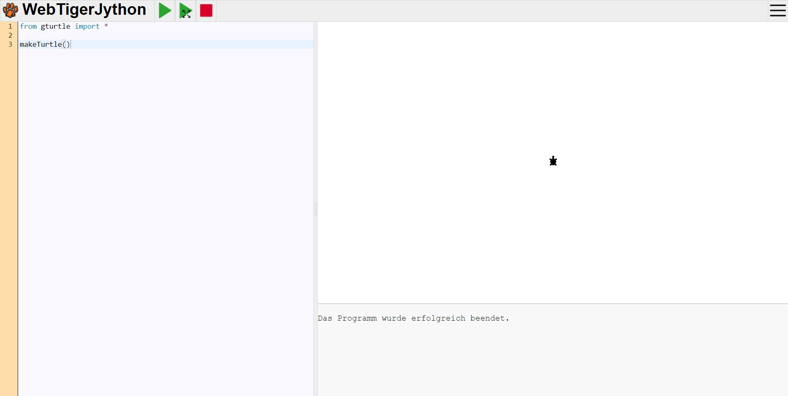

Dein erstes Programm - die Schildkröte erscheinen lassen
Nun ist es soweit: wir wollen die ersten Zeilen Programm-Code schreiben. Ziel ist es am Ende, dass die Schildkröte im Vorschaufenster angezeigt wird.
Das folgende erste kleine Programm wirst du in allen weiteren Programmen immer wieder benötigen. Es sollte der Beginnn in jedem deiner Programme sein. Vergiß dies nicht, sonst werden deine zukünfigten Programme nicht richtig funktionieren.
1. Editor öffnen
Öffne zunächst wie in Einrichtung und Programmstart beschrieben den Editor in einem Browserfenster.
2. Programmcode eingeben
Gib nun folgende zwei Programmzeilen ein:
from gturtle import *
makeTurtle()
Wenn du jetzt dein Programm über die Schaltfläche  startest, dann erscheint im
Vorschaufenster die kleine Schildkröte. Im Meldungsfenster erscheint die Ausgabe
startest, dann erscheint im
Vorschaufenster die kleine Schildkröte. Im Meldungsfenster erscheint die Ausgabe
"Das Programm wurde erfolgreich beendet". Das Ganze sieht dann in etwa so aus:

3. Erklärung
| Programmcode | Erklärung |
|---|---|
from gturtle import * |
Dies ist die erste Zeile eines jeden TigerJython-Programms. Es ist wichtig, dass du diese Zeile immer zu Beginn
deines Programms in der ersten Zeile einfügst.
Durch diese Codezeile wird dem Programm gesagt, dass der nachfolgende Code mit dem Befehlen des "Turtle-Programms" geschrieben wird. Das "Turtle-Pogramm" ist eine sogenannte Bibliothek, die wir durch diesen Befehl in unser Programm einbinden. |
makeTurtle() |
Mit dieser Codezeile erschaffen wir unserer Schildkröte. Wenn du diese Codezeile nicht zu Beginn deines Programms einfügst, dann wird das Programm keine Schildkröte erstellen, die dann dein Programm entsprechend deinem Programmcode malen kann. Vergiß also auch diese Codezeile zu Beginn deines Programms nicht. |